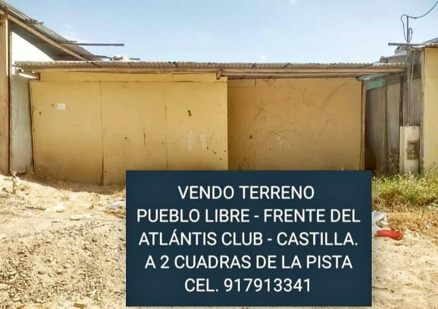

Precio desconocido

VENDO TERRENO FRENTE DEL ATLÁNTIS CLUB. Medidas: 7 m de ancho por 20 m de fondo. Servicios Agua y luz. Tiene Constancia ( Papeles en Regla ). Tiene un cuarto de triplay con techo de calamina. UBICACIÓN: PUEBLO LIBRE - Castilla - Piura. FRENTE DEL ATLÁNTIS CLUB. A 2 cuadras de la pista panamericana. Cerca a la Universidad Alas Peruanas. Interesados Imbox y celular [hidden information].